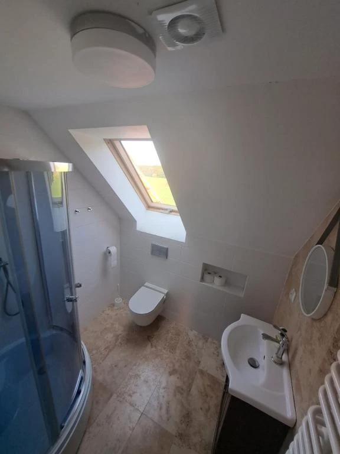

Kameralne przyjęcie komunijne — sala i ogród na wyłączność pod Olsztynem
Szukacie spokojnego lokalu lub agroturystyki na Pierwszą Komunię Świętą do ok. 30 osób w okolicach Olsztyna, Pasymia, Purdy, Barczewa lub Szczytna? Zamiast zatłoczonej sali z kilkoma przyjęciami naraz wybierzcie nasze siedlisko w Giławach — przestronną, jasną część jadalnianą bez ścisku, zadaszony taras, zielony ogród i domową kuchnię na wyłączność.
- domowe posiłki z eko gospodarstwa + menu dla dzieci
- opcja noclegu dla rodziny z daleka (do 14 osób)
- 9,4/10 na Booking.com
Komunia bez pośpiechu i tłoku
Uroczysty obiad komunijny przy wspólnym stole, a za drzwiami majowa zieleń
Dzień Pierwszej Komunii Świętej mija szybko — tym bardziej warto spędzić go wśród najbliższych, bez gwaru obcych stolików i zerkania na zegarek. W Agroturystyce Giławy przyjmujemy tylko jedną rodzinę tego dnia (do ok. 30 osób), oddając Wam całą przestrzeń parteru, zadaszony taras oraz rozległy ogród z widokiem na łąki i las.
Dorośli mogą spokojnie porozmawiać przy kawie przy wspólnym stole lub na zadaszonym tarasie, dziadkowie mają ciszę i wygodę, a dzieci zamiast nudzić się przy stole mogą bezpiecznie wybiegać się na zielonej trawie z dala od ruchliwych ulic.
Gotujemy z sercem i ze świeżych składników z naszego ekologicznego gospodarstwa — a jeśli część bliskich przyjeżdża z dalszych stron Polski, mogą zostać u nas na noc w trzech komfortowych apartamentach z łazienkami.


Jak wygląda przyjęcie komunijne w Giławach
Spokojny rytm przyjęcia komunijnego — od obiadu po wieczorną kawę
Ustalamy scenariusz pod Waszą godzinę Mszy Świętej i potrzeby rodziny — bez sztywnego pośpiechu.
-
01 · Powitanie
Prosto z kościoła na zielone siedlisko
Wygodny, bezpłatny parking na posesji tuż przy domu. Powitanie gości na zadaszonym tarasie i chwila na życzenia bez tłumu innych rodzin.
-
02 · Obiad
Uroczysty, domowy posiłek
Wspólny obiad w jasnej jadalni na ok. 30 osób: domowe zupy, mięsa, dodatki i osobne propozycje, które naprawdę lubią dzieci.
-
03 · Deser i plener
Tort, kawa i rodzinne zdjęcia
Kącik kawowy z ekspresem, stół słodki i tort komunijny. W międzyczasie sesja zdjęciowa na łące oraz bezpieczna zabawa dzieci w ogrodzie.
-
04 · Wieczór
Bez wypraszania — z opcją noclegu
Kolacja na ciepło lub zimna płyta w swobodnej atmosferze. Chrzestni i rodzina z daleka mogą zostać na noc w naszych 3 apartamentach.
Dlaczego rodzice wybierają Giławy
Lokal na komunię dla ok. 30 osób — wszystko w jednym miejscu
Łączymy domowe ciepło i warmińską gościnność z wygodą miejsca przygotowanego specjalnie na kameralne uroczystości.
Wyłączność do ok. 30 gości
Jedno przyjęcie w dniu — nikt obcy nie wchodzi na salę ani do ogrodu. Pełna prywatność i swoboda dla Waszej rodziny.
Domowa kuchnia z eko produktów
Posiłki przygotowane na miejscu, chwalone przez gości za smak i jakość (w tym menu dostosowane do najmłodszych).
Ogród, taras i bezpieczna przestrzeń
Zadaszony taras na każdą majową pogodę i duży zielony teren, po którym dzieci mogą biegać bezpiecznie z dala od ruchu ulicznego.
Przestronny parter bez ścisku
Na czas uroczystości całą przestrzeń parteru ustawiamy pod wspólne stoły dla ok. 30 osób — wygodnie, jasno i z bezpośrednim wyjściem na taras.
Noclegi dla gości z daleka
Trzy niezależne, dwupokojowe apartamenty z prywatnymi łazienkami (do 14 miejsc) — rodzina z innego miasta nie musi szukać hotelu.
Szybki dojazd w promieniu 30 km
Dogodne położenie między Olsztynem, Pasymiem, Barczewem i Szczytnem oraz duży, bezpłatny parking bezpośrednio przy domu.
Lokalizacja · Promień 30 km
Sala na komunię blisko kościoła — dojazd z Olsztyna, Pasymia, Barczewa, Purdy i Szczytna
Agroturystyka Giławy (Giławy 75, gm. Purda) leży w zielonym sercu Warmii, na styku z Mazurami. Po Mszy Świętej goście dojadą do nas w kilkanaście minut — bez miejskich korków i szukania parkingu.
📍 Dokładny adres do nawigacji i na zaproszenia komunijne: Giławy 75, 11-030 Giławy (gm. Purda). Na posesji czeka bezpłatny parking dla wszystkich samochodów gości.
Zobaczcie nasz dom i otoczenie
Zdjęcia sali, tarasu i ogrodu na przyjęcie komunijne w Giławach
Kliknij wybrane zdjęcie, aby obejrzeć je w powiększeniu.




Zaufanie rodzin
Goście chwalą nasze jedzenie, opiekę i menu dla dzieci
20 opinii na Booking.com
„Przepyszne śniadanka! Menu dla dzieci! Przepiękna okolica.”
„Wszystko ok. Miejsce piękne, gospodarze przemili, super jedzenie.”
„Rewelka, super posiłki, opieka oraz otoczenie.”
„Okolica, siedlisko, przemili gospodarze.”
Autentyczne cytaty z opinii gości opublikowanych w serwisie Booking.com.
Oferta komunijna
Agroturystyka na komunię 2027 / 2028 — przyjęcie szyte na miarę
Każde przyjęcie komunijne ustalamy bezpośrednio z rodzicami — tak, aby pasowało do liczby gości, wieku dzieci i Waszego budżetu.
Kameralne przyjęcie komunijne (ok. 30 osób)
Agroturystyka Giławy · Giławy 75 (gm. Purda) · 10–25 min z Pasymia, Barczewa, Szczytna i Olsztyna
- Obiekt na wyłączność: cały parter zaaranżowany pod przyjęcie bez ścisku, zadaszony taras i zielony ogród tylko dla Was
- Domowe menu komunijne: uroczysty obiad, przystawki, kawa/herbata, miejsce na tort oraz dania lubiane przez dzieci
- Naturalna kuchnia: świeże składniki z naszego ekologicznego gospodarstwa (własne jajka i warzywa)
- Komfort i spokój: bezpłatny parking przy domu, bezpieczny trawnik dla dzieci, brak limitu „na 3 godziny”
- Opcja noclegu: 3 dwupokojowe apartamenty z łazienkami (do 14 miejsc) dla gości przyjezdnych
Porozmawiaj bezpośrednio z gospodarzem
W maju weekendów komunijnych jest tylko kilka, a my organizujemy jedno przyjęcie dziennie. Warto wcześniej sprawdzić dostępność daty i przyjechać obejrzeć dom oraz ogród na żywo.
- Możliwość obejrzenia siedliska przed decyzją
- Elastyczne menu (także diety i dania dla dzieci)
- Bezpośredni kontakt — bez pośredników
Rezerwacja bezpośrednio u właścicieli
Jak zarezerwować termin komunii?
Wystarczy krótki telefon, SMS albo e-mail — od razu potwierdzimy dostępność wybranej niedzieli lub soboty.
-
Podaj datę i liczbę gości
Zadzwoń lub kliknij gotowy SMS poniżej — napisz planowaną datę komunii, orientacyjną liczbę osób (ok. 20–30) oraz czy potrzebne będą noclegi.
-
Spotkanie i ustalenie menu
Zapraszamy na krótką wizytę w Giławach. Zobaczycie jadalnię, taras i ogród oraz wspólnie dopracujemy menu i wycenę.
-
Rezerwacja daty na wyłączność
Po wpłacie zadatku termin zostaje zamknięty — cały dom i ogród w dniu komunii należą wyłącznie do Waszej rodziny.
Lub zapytaj o wolny termin komunii przez formularz
Podaj planowaną datę i liczbę gości — oddzwonimy lub odpiszemy z propozycją menu i wyceną.
Najczęstsze pytania rodziców
Pytania o organizację, menu i terminy komunii w Giławach
Ile maksymalnie osób możemy zaprosić na przyjęcie komunijne?
Komfortowo obsługujemy kameralne przyjęcia komunijne do ok. 30 osób. Na czas uroczystości ustawiamy stoły w przestronnej części parteru tak, aby było wygodnie i bez ścisku, a wszyscy goście mieli swobodne wyjście na zadaszony taras i do ogrodu.
Czy w dniu komunii odbywa się tylko nasze przyjęcie?
Tak — dajemy Wam 100% wyłączności. Nie organizujemy dwóch komunii jednocześnie, więc nikt obcy nie dzieli z Wami sali, tarasu ani ogrodu.
Jak wygląda menu komunijne i czy przygotowujecie dania dla dzieci?
Menu ustalamy wspólnie z rodzicami. Bazujemy na domowej, świeżej kuchni z produktów z naszego ekologicznego gospodarstwa. Zawsze dbamy też o dania lubiane przez najmłodszych oraz indywidualne potrzeby (np. dania wegetariańskie lub bez wybranych alergenów).
Czy możemy przywieźć własny tort komunijny lub dekoracje stołu?
Oczywiście! Chętnie pomożemy w przygotowaniu odświętnego nakrycia stołu, a jeśli chcecie przynieść własny tort komunijny, ciasta lub ulubione dekoracje florystyczne — bez problemu ustalimy wszystkie szczegóły.
Czy rodzina przyjeżdżająca z daleka może zostać u Was na noc?
Tak! Na piętrze dysponujemy 3 niezależnymi, dwupokojowymi apartamentami z prywatnymi łazienkami (łącznie do 14 miejsc noclegowych). Rodzina z innych miast może zostać po przyjęciu i zjeść następnego ranka domowe śniadanie.
Co w przypadku deszczu lub chłodniejszego majowego dnia?
Jesteśmy przygotowani na każdą pogodę: przyjęcie odbywa się w jasnej, ciepłej sali na parterze (w razie chłodu możemy rozpalić kominek!), a duży taras przy domu jest zadaszony.
Gdzie dokładnie leżą Giławy i czy można wcześniej obejrzeć obiekt?
Adres to Giławy 75, 11-030 Giławy (gm. Purda) — ok. 10 min z Pasymia, 15 min z Purdy i Klebarka, 15–20 min z Barczewa, 20 min z Dźwierzut, 20–25 min ze Szczytna i ok. 25 min z Olsztyna (Pieczewo/Jaroty). Zapraszamy wcześniej na kawę i obejrzenie miejsca — wystarczy zadzwonić pod +48 512 720 750.
Kiedy najlepiej rezerwować salę na komunię 2027/2028 i jak wygląda wycena?
Organizujemy tylko jedno przyjęcie komunijne dziennie, dlatego wolne niedziele majowe warto sprawdzać z wyprzedzeniem. Wycenę przygotowujemy indywidualnie od osoby w zależności od wybranego wariantu menu, liczby dorosłych i dzieci oraz ewentualnych noclegów.
Wolne terminy 2027 / 2028
W maju jest tylko kilka niedziel — sprawdź, czy Wasza data jest wolna
Zadzwoń lub napisz krótki SMS. Chętnie opowiemy o menu, wolnych terminach i zaprosimy do Giław na obejrzenie domu oraz ogrodu.